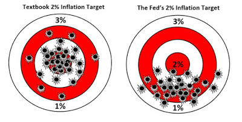

What's at stake in monetary policy? The most obvious answer is "jobs and growth" – to coin a phrase. The idea is that, by meeting its target of low and steady (2-3%) inflation, the RBA tries also to keep us as close as practicable to full employment. But, as we've realised since the GFC, there's also "financial stability". And right now they're in some tension. For years the RBA has been reluctant to cut rates because low interest rates were what blew the financial bubbles that got us into this GFC problem – capiche?
Indeed, there's been no shortage of people telling us that cutting rates as far as we already have is crazy. But there's something else at stake. Economic 'hawks' and 'doves' are performing a different self-image. All pundits like to think they're evidence based. Even so, those animal names came from military strategy. Hawks are serious and tough. What they have to say may not be nice, but they're not afraid to tell us to take our medicine. They're rigorous chaps.
Doves let in a little more love. Why some of them could even be chapettes (my spell-check suggests "chapattis" but I'll just let that bit of algorithmic misogyny go through to the keeper). So how much is the debate a psychodrama between hawks and doves, and how much is it a careful weighing of the costs and benefits according to the evidence?
I've only read those complaining that rates are too low en passant as it were. I've not read them closely. So it enables me to propose a test which, in the full glory of my ignorance has some claims to objectivity. Here's one commentator quoted by Gene Tunny which prompted me to pose my test.
…the RBA had recklessly underestimated the impact of its 2012 and 2013 rate cuts on house price growth and credit creation, which would precipitate a bubble and the need for unprecedented regulatory constraints on lending…
What I find unsatisfying about this is that it doesn't paint the story as a dilemma which can only be solved by weighing pros and cons of the alternatives. It suggests that there's one true path which, at least in principle, is pretty clear (perhaps the author sketched out the considerations I'm suggesting – I genuinely don't know). I think thinking this thing through needs to consider at least two things. The first is that old business about costs and benefits. If higher interest rates now will lower the risk of financial instability later, how much will they lower it, what are the benefits of so doing, and what are the costs? The one attempt to do this that I'm aware of was by Lars Svensson. In this paper, the former Riksbank Deputy Governor, compared the costs of higher rates– increasing unemployment by around 1.2 percentage points – with its benefits – the marginally smaller likelihood and severity of a possible future downturn. The result? The costs of higher rates outweighed the benefits 200 to one. The Riksbank subsequently reversed policy pioneering negative repo rate – relatively successfully. Now you can disagree with Svensson's figuring, but not I think with his reckoning of costs against benefits. So who's doing that in the Australian debate? (This is a genuine, not a rhetorical, question by the way.) Secondly I don’t think the choice is a simple one. Even if we rate financial stability as much more important than maximising short and medium term economic activity, the 'hawks' accept, I think that rates should still be relatively 'accommodating' as the RBA likes to say – or 'low' as they say in the papers. So, erring on the side of higher rates for financial stability's sake keeps rates at a low level longer than they'd be if we cut them more aggressively to get the economy growing again as quickly as practicable whereupon they'd resume their upward climb towards normality. This is, in fact the situation we're in and to which I've been objecting for years. You can object to how low the RBA went – down to 1.5% – but its current policy takes us where I'm talking about. And it seems like a pretty good way to blow bubbles. For probably about five years now, official forecasts have been for inflation not to rise out of its band and for unemployment to rise, flatline or fall far more gradually than it would with more aggressive policy. So if you're thinking of borrowing to invest, it looks like rates will stay low for a long time. Is this more bubble resistant than getting rates down to zero, with a quite substantial exchange rate response, so that we can get them heading up as soon as possible – to keep those borrowing to invest a little more focused on downside risks in a year or two? My guess is that this more direct and aggressive approach lowers the risk of blowing bubbles. But that's all it is. My guess. The RBA's research division is bigger than mine. Have they done any work on this? It seems not. Have any of the hawks arguing for higher rates done it or even canvassed this conundrum?

I mentioned this to an RBA board member at the RBA dinner in Melbourne last March. I asked if this question had ever been raised on the board. They said no, but that it was the best question they'd heard in a year or so. What concerns me here is not that the bank might be wrong, but that the bank in its public accounting for its decisions and its publication of research papers doesn't seem to be leading this discussion or trying to really structure that discussion so that we can have the best chance possible of getting to the right answer. It's all much more by the seat of the pants. My conclusion is that the choices we're making are temperamental – not evidence based. You have hawks who think we shouldn't have cut as much as we have. You have textbook fuddy-dovvies like me who think we should cut as aggressively as we can to get back on a strong growth path both to maximise jobs and growth and minimise the risk of financial bubble blowing. And you've got the RBA sitting on the fence, with the seat of its pants doing double-time. Oh and here's one more test of whether what we're seeing is reasoning by weighing the evidence or reasoning by temperamental leanings. If people really are concerned about the prospect of bubbles, wouldn’t this also lead them to be arguing for more expansive fiscal policy so we can get this risky period of low-interest rates behind us and nip any bubbles in the bud as soon as we can – as well as returning the budget to surplus once we've restored the economy closer to capacity?
Lowe often mentions the word "confidence" alongside the word "stability" when he talks about the 1.5% rate.
This leads me to believe he reckons cutting the rate will lead to panic about the health of the economy. Perhaps the panic would be mainly in the pages of the financial press. Perhaps he's worrying too much about not upsetting his political masters. Perhaps he (or his predecessor) was right about panic once when 1.5% seemed low, rather than high by global standards.
Or perhaps he's tried to meaures the elasticity of demand for credit in the productive sectors of the economy, weighed up the cost of lower rates to Australia's many savers, and concluded even a little panic is not worth the meagre upside.
Some questions: How has our economy managed to achieve steady growth when the exchange rate fluctuates so drastically? Do investors assume that the exchange rates will tend to a predictable mean and go ahead with planning or maintaining activity on that basis? How is it that imports like cars have kept the same price"? Do sellers buy futures to cushion changes? So how much does that cost us? Major exporters are paid in greenbacks. Are they complicit in moves to drive the POz down? How much of the fluctuation is due to the business of making money out of shifting money around for purely speculative reasons?
Or perhaps he's flying by the seat of his pants. Really, this kind of scouting around for a reason to conclude that it's all so well thought through when all the evidence points in another direction is pretty frustrating – to me anyway. If I'm to credit what you say, it has to be mixed in with some kind of 'reputation' thing – he thinks the reaction to the Bank changing course would be loss of confidence in the bank.
Economists admit it's hard to know how to set monetary policy change their minds: SHOCK!
Perhaps there's a bit of that in there, but the idea that the markets would panic if we kept lowering the rate and made it clear we'd cut aggressively until we saw strong recovery, well I'm afraid it just seems silly.
My best efforts at responding.
Some questions:
How has our economy managed to achieve steady growth when the exchange rate fluctuates so drastically? BECAUSE TRADE IS A SMALL(ISH) PART OF OUR ECONOMY
Do investors assume that the exchange rates will tend to a predictable mean and go ahead with planning or maintaining activity on that basis? ROUGHLY YES, WITH CONTINGENCIES AS BEST THEY CAN SUBJECT TO GOING AHEAD.
How is it that imports like cars have kept the same price”? Do sellers buy futures to cushion changes? So how much does that cost us? THEY HAVEN'T. THEY KEEP THE SAME STICKER PRICES AT RETAIL BUT DISCOUNTS VARY A LOT. WHEN THE AUS WAS AT US$1.10 A LEXUS DEALER OFFERED ME A FOUR WHEEL DRIVE LEXUS RETAILING AT $120K OR SO AT $86 K
Major exporters are paid in greenbacks. Are they complicit in moves to drive the POz down? TRYING TO DRIVE THE RATE AROUND IS A SERIOUS BUSINESS – MOST SPECULATORS ARE OPPORTUNISTIC. WOULDN’T YOU BE IF YOU WERE IN THE MARKET.
How much of the fluctuation is due to the business of making money out of shifting money around for purely speculative reasons? IT SEEMS THERE'S FAR MORE SPECULATION THAN IS JUSTIFIED ECONOMICALLY. THIS IS CONTRARY TO THE EXPECTATIONS YOU'D GET FROM ECONOMICS 101 AND IT'S PROBABLY DESTABILISING RATHER THAN STABILISING – THOUGH IT DOES DEEPEN THE MARKET WHICH PRESUMABLY HAS SOME OFFSETTING VALUE